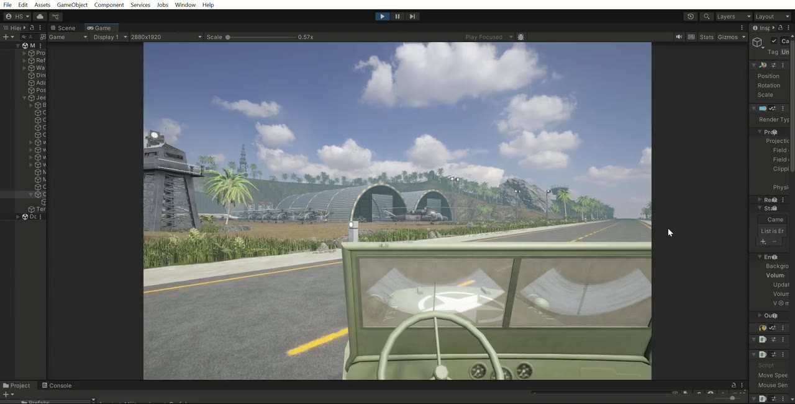
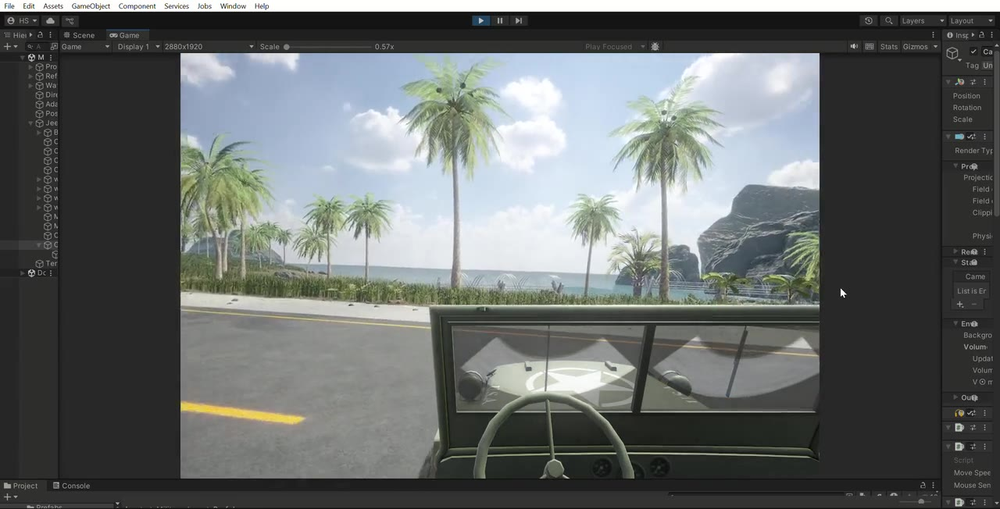
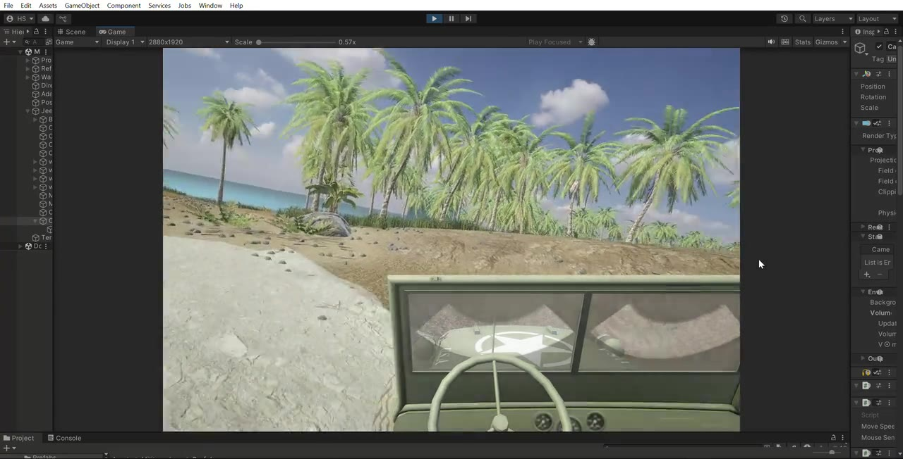
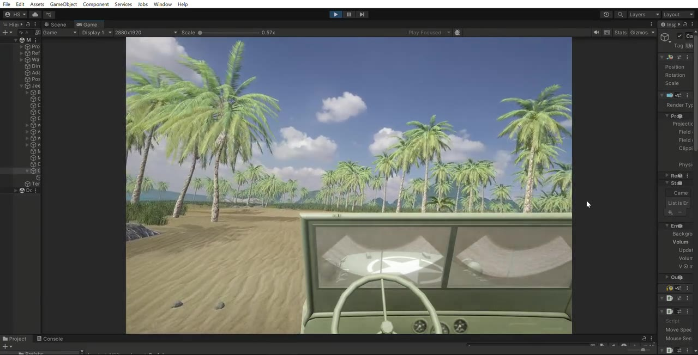

A first-person VR driving experience built for a military-themed event activation in Delhi. Player takes the wheel of a vintage military jeep and drives through an island environment featuring an airbase, coastal roads, and off-road terrain. Vehicle systems, VR cockpit ergonomics, scene composition, and level design by me; environment art sourced from commercial asset packs.
A VR experience built for a military-themed event at Mall of India. Player puts on a headset, sits behind the wheel of a vintage WW2-era jeep, and drives across an island that progresses from a paved coastal road past an airbase, off-road through palm forests, and onto a beach. The whole experience is two to three minutes of continuous driving.


I want to be honest about this because it matters for what the project actually demonstrates:
The art is asset-pack work. The driving experience is mine. That is what hiring managers at a VR studio would care about, anyone can buy a palm tree; making a vehicle feel right in VR is hard.

